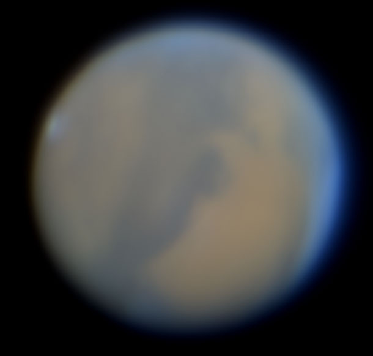
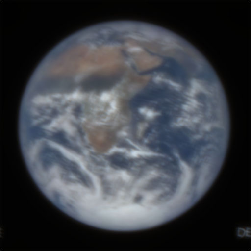

Jup_CloudyNights_Bird.tif
Settings: Wiener NSR_0.00063 Blur_36 Lorentz FWHM_4.00 PSF Reduced at FWHM x_15.0

jup_PicMidi_2.tif
Settings: Wiener NSR_0.00089 Blur_39 Lorentz FWHM_5.00 PSF Reduced at FWHM x_10.0
JupiterGRS.tif
Settings: Wiener NSR_0.00022 Blur_27 Lorentz FWHM_4.50 PSF Reduced at FWHM x_10.0
Moon_SGL_Craig.tif
Settings: Wiener NSR_0.00141 Blur_43 Lorentz FWHM_4.00 PSF Reduced at FWHM x_2.0
Mars_SkyImaging_g3_ap31.tif (Rolf Arcan)
Settings: Wiener NSR_0.00089 Blur_39 Moffat Beta_0.90 FWHM_5.00 PSF Reduced at FWHM x_5.0

Earth_Aberrator_0.20Turb_300mm_f20.tif [Resized to 512x512 Blurred by Aberrator - Cor Berrevoets]
Settings: Wiener NSR_0.00063 Blur_36 Moffat Beta_0.95 FWHM_1.50 PSF Reduced at FWHM x_10.0

hst_Jupiter_Aberrator_0.20Turb_300mm_f20.tif [8-bit resized to 512x512 Blurred by Aberrator - Cor Berrevoets]
Settings Step 1: Wiener NSR_0.00178 Blur_45 Moffat Beta_0.95 FWHM_1.50 PSF Reduced at FWHM x_20.0
Settings Step 2: Wiener NSR_0.09987 Blur_80 Gaussian FWHM_1.50
Earth1_BLURRED Lorentz FWHM_15.00 PSF Reduced at FWHM x_20.0.tif [Blurred by Deconvolvulator - no noise added]
Settings: Wiener NSR_0.00000001 Blur_0 Lorentz FWHM_15.00 PSF Reduced at FWHM x_20.0 [Extreme example by typing in NSR value]
hst_Jupiter_Orig_BLURRED Lorentz FWHM_15.00 PSF Reduced at FWHM x_5.0.tif [Blurred by Deconvolvulator - no noise added]
Settings: Wiener NSR_0.00000004 Blur_0 Lorentz FWHM_15.00 PSF Reduced at FWHM x_5.0 [Extreme example by typing in NSR value]
NGC3372_Keyhole.tif [Stretched image, Author 1.42''/px]
Settings: Wiener NSR_0.00316 Blur_50 Moffat Beta_1.50 FWHM_2.00
M42_Core.tif [Stretched image, Author]
Settings: Wiener NSR_0.02509 Blur_68 Moffat Beta_1.40 FWHM_2.50
IC434_rotated.tif [Author image, but rotated by software - not realistic noise level]
FIELD ROTATION - Repair
Settings: Motion Deblur->Rotation checked Angle 1.45 Line thickness 1 Centre (-1,-1) Weiner NSR_0.00022
Settings (Experimental): COSMETIC REPAIRS -> Motion blur deringing 0.06 (Repair more stars) 0.01 (Repair further out from star centres)
Purga_McNaught_Motion.tif [Author image, untracked stack]
MOTION BLUR - Repair
Settings: Motion Deblur->Length 11.0 Angle 67.0 Rotate img checked Line thickness 1 Anti-aliased checked Weiner NSR_0.00398
motion_blur_Oxon.tif
MOTION BLUR - Repair
Settings: Wiener NSR_0.00141 Blur_43 Motion Length_26.0 Angle_0.0 Fix border artifacts checked